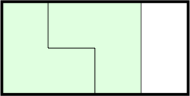
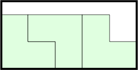
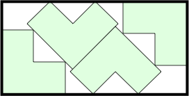
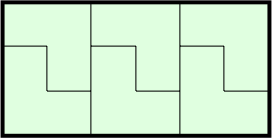
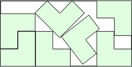
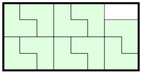
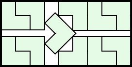
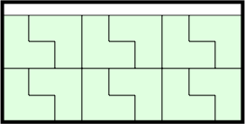
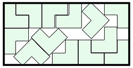
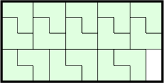

The following pictures show n L's (with short side 1) packed inside the smallest known domino (with short side length s).
         
1.-2.
s = 2
Trivial.
3.
s = 3(2+ √2)/4 = 2.560+
Found by Erich Friedman in April 2026.
4.
s = 6(1+√2)/5 = 2.897+
Found by Erich Friedman in April 2026.
5.-6.
s = 3
Trivial.
7.
s = 7/3+√2 = 3.747+
Found by Erich Friedman in April 2026.
8.-10.
s = 4
Trivial.
11.
s = 3(6+√2)/5 = 4.448+
Found by Maurizio Morandi in April 2026.
12.
s = 9/2 = 4.5
Trivial.
13.
s = (14+11√2)/6 = 4.926+
Found by Maurizio Morandi in April 2026.
14.-16.
s = 5
Trivial.